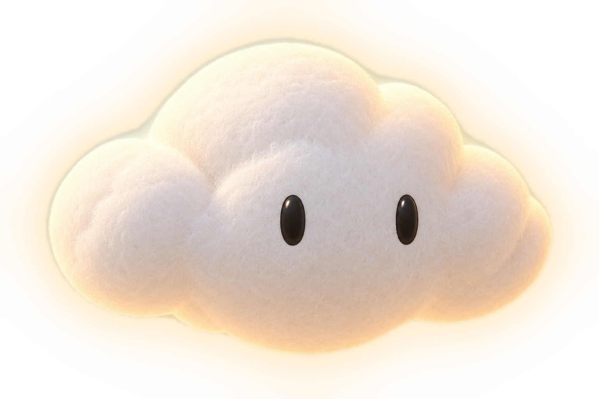
Character catalog · Volume 01
A small cloud for a brighter day.
Simple form, endless emotions.
Journal is a small needle-felted cloud with two glossy black eyes and no mouth. It never speaks: it shows how it feels through shape, tilt, light and a few glowing marks drawn in the air.
Colour palette
Turnaround
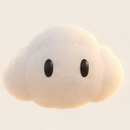
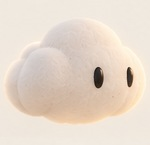
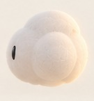
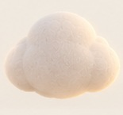
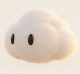
Close-ups
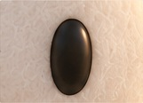
Lighting reference
Journal has no mouth. Moods come from the body first: rounder for happy, a tilt for curious, a little stretch for excited, eyes lower for sleepy. Light-beam marks are added on top when a feeling needs to read from far away.
Mood variations (shape, tilt, lighting)
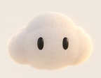
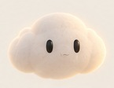
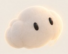
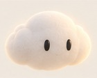
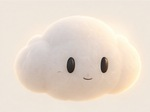
Emotions with light-beam reactions
Actions with light trails
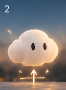
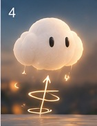
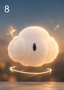
Animation sequence: sit still, float up, turn around
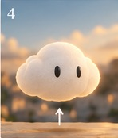
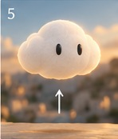
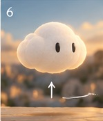
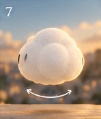
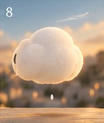
Storyboard for the 10-second animation
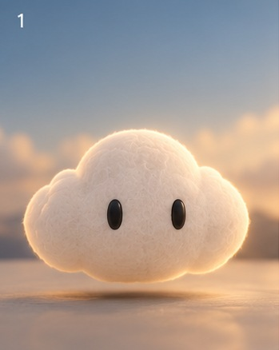
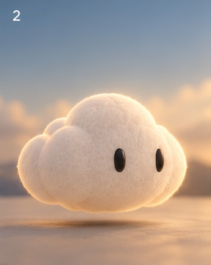
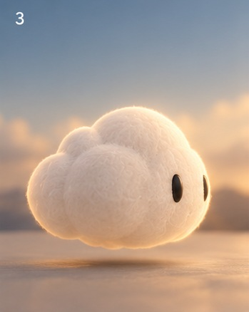
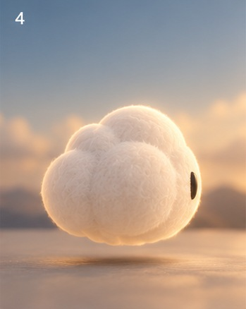
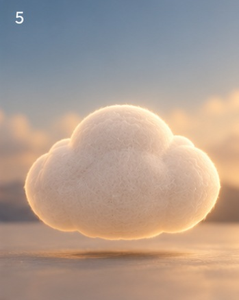
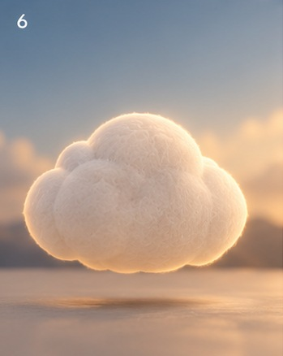
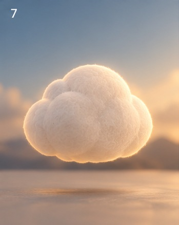
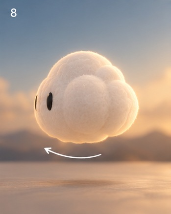
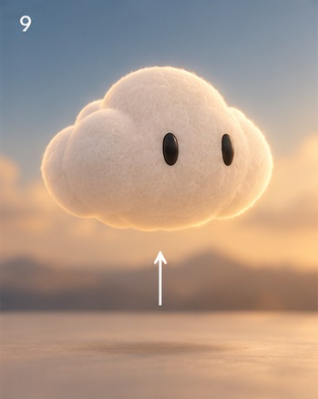
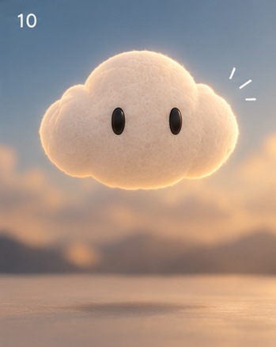
Motion is slow and buoyant: Journal eases into every move, floats rather than jumps, and settles with a small overshoot. Light trails show direction (an arrow for lift, a ring for rotation) and fade as the move ends.
Cozy, fresh and full of life
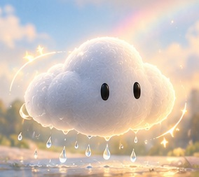
Crisp, magical and peaceful
Dreamy, calm and full of wonder
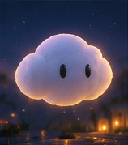
The felt body keeps its cream colour everywhere; the world tints it. Daylight is neutral, golden hour adds peach in the creases, night turns the glow lavender, and rain greys the wool down.
The icon reduces Journal to its silhouette and its glow: a single soft cloud shape lit from inside, with no eyes, so it stays readable at small sizes. Four background options are under consideration.
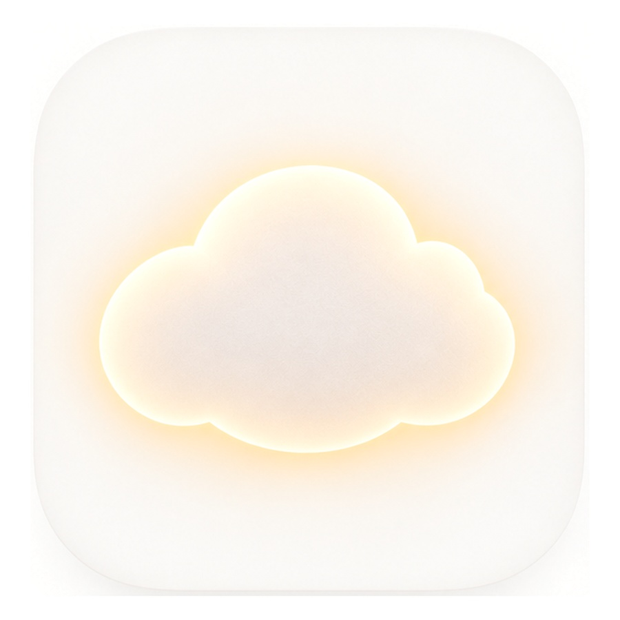
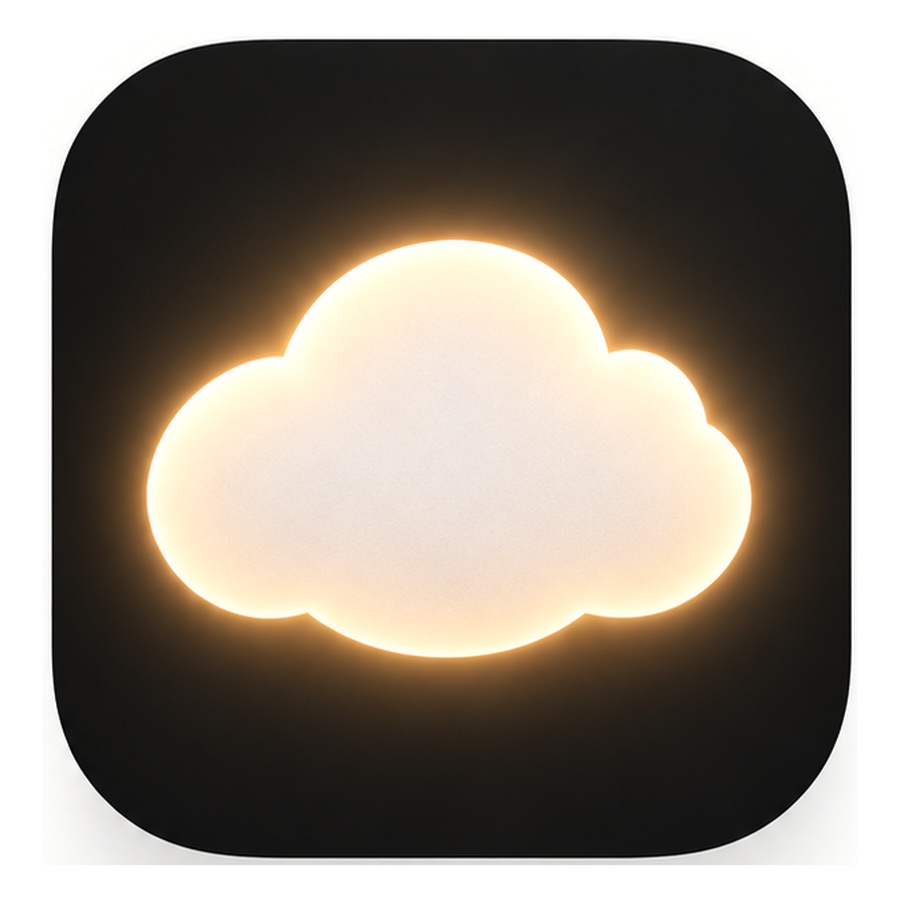
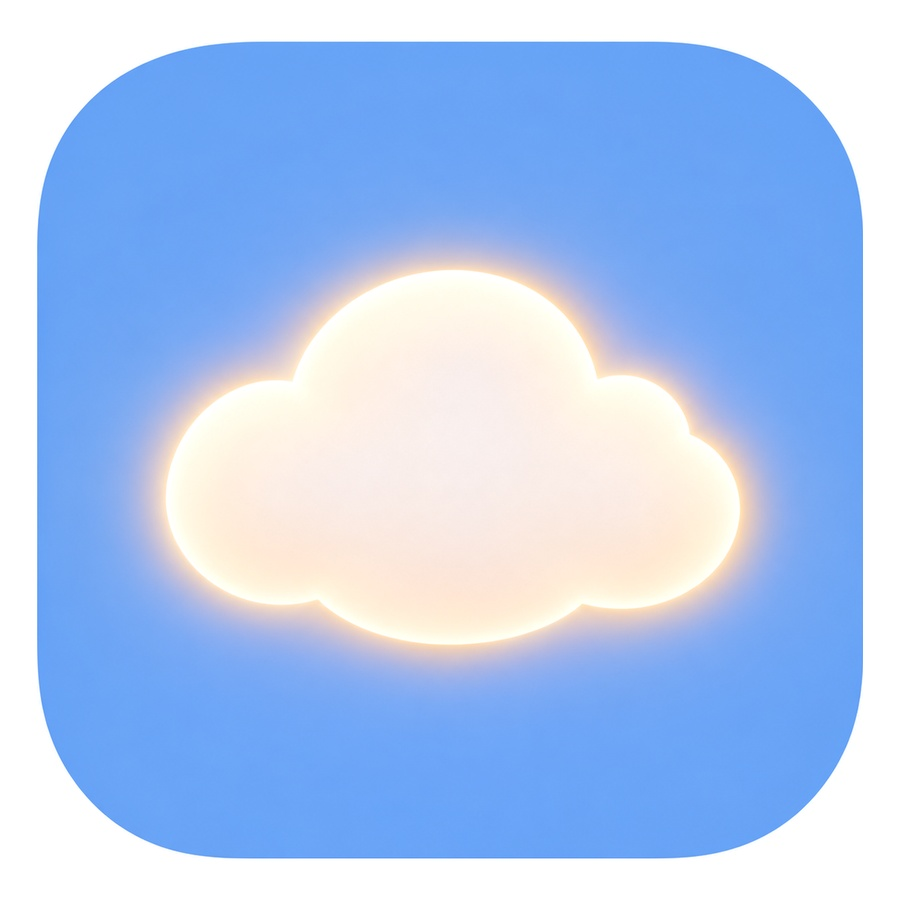
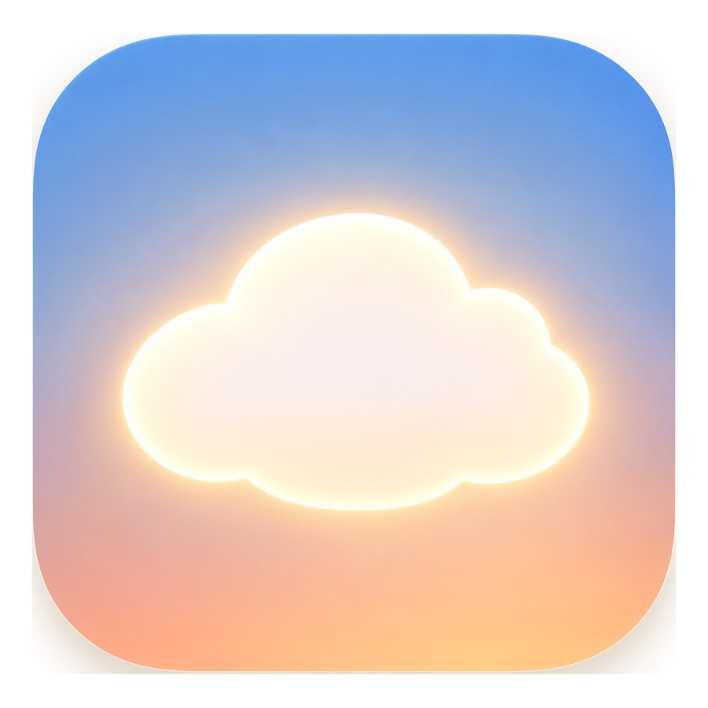
At home-screen, settings and notification sizes